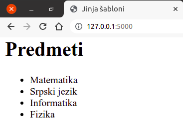
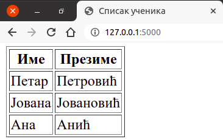
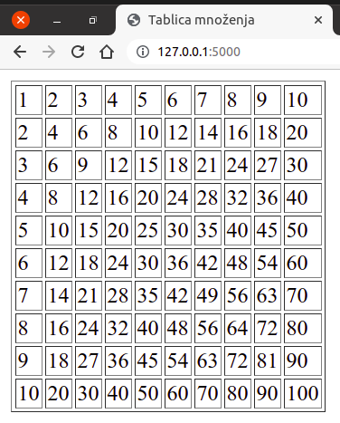

Шаблони¶
Веб-апликације као одговор најчешће шаљу HTML стране. Навођење иоле дужег HTML-а у оквиру ниски директно у изворном коду програмског језика је непрегледно и тешко за одржавање. Стога већина програмских библиотека за писање веб-апликација омогућава да делови HTML кôда смештају у посебне датотеке (тзв. шаблоне).
Приметимо да у претходним примерима одговор који је наша веб
апликација послала клијенту не представља исправан HTML запис, већ
обичан текст. Стога функцију index можемо проширити тако да врати
праву HTML страну.
from flask import Flask
app = Flask(__name__)
@app.route("/")
def index():
return """
<html>
<head>
<title>Zdravo</title>
</head>
<body>
<h1>Zdravo</h1>
</body>
</html>
"""
Приметимо да смо ниску која садржи HTML кôд навели између наводника
облика """...""" уместо између наводника облика "..." или
'...', чиме је омогућено да се ниска простире кроз више редова.
Мешање HTML и Python кода у истој датотеци је врло непрактично. Стога
библиотека Flask користи библиотеку Jinja
(https://jinja.palletsprojects.com/), која омогућава да се HTML кôд
држи одвојено у тзв. шаблонима (енгл. templates) и да Python
програм коришћењем тих шаблона једноставно креира HTML стране које ће
се слати као одговор клијенту. Библиотека Flask подразумева да се
сви шаблони чувају у директоријуму templates. Претходни програм
се може прилагодити на следећи начин. Нашу апликацију ће чинити две
датотеке: датотека app.py у кореном директоријуму апликације и
шаблон index.html који се налази у његовом поддиректоријуму
templates.
.
├── app.py
└── templates
└── index.html
У том случају би датотека app.py имала следећи садржај:
from flask import Flask, render_template
app = Flask(__name__)
@app.route("/")
def index():
return render_template("index.html")
Са друге стране датотека templates/index.html има садржај:
<!DOCTYPE html>
<html>
<head>
<title>Zdravo</title>
</head>
<body>
<h1>Zdravo</h1>
</body>
</html>
У функцији index која ће одговарати на HTTP захтев, позивамо
функцију render_template библиотеке Flask (да би могла да буде
позвана, потребно је да буде претходно увезена, тј. наведена у склопу
директиве import). Функција render_template је та која чита
садржај шаблона (у овом случају из датотеке index.html), обрађује
шаблон и враћа резултујућу ниску.
Иако је у претходном примеру садржај шаблона враћен у свом
оригиналном, неизмењеном облику, онакав какав је и написан, основно
богатство механизма шаблона долази кроз то да се функцијом
render_template шаблони могу обрађивати. Наиме, шаблони могу да
садрже директиве на специјализованом језику, који доста подсећа на
програмски језик Python, на основу којих се зна како да се подаци који
се додатно проследе функцији render_template интегришу у садржај
HTML стране. Прикажимо ово на једном једноставном примеру. Поново ћемо
претпоставити да се апликација састоји од датотеке app.py у
кореном директоријуму и датотеке index.html у његовом
поддиректоријуму templates.
Датотека app.py има следећи садржај:
from flask import Flask, render_template
app = Flask(__name__)
@app.route("/")
def index():
return render_template("index.html",
naslov="Predmeti",
spisak=["Matematika", "Srpski jezik", "Informatika", "Fizika"])
Приметимо да се функцији render_template након обавезног, првог
аргумента који представља назив датотеке шаблона, прослеђују и два
додатна именована аргумента: први је naslov, коме је придружена
ниска Predmeti, а други је spisak, коме је придружена листа
која садржи 4 наслова предмета.
Погледајмо садржај датотеке templates/index.html.
<!DOCTYPE html>
<html>
<head>
<meta charset="utf-8" />
<title>Jinja šabloni</title>
</head>
<body>
{% if naslov %}
<h1>{{ naslov }}</h1>
{% endif %}
<ul>
{% for stavka in spisak %}
<li>{{ stavka }}</li>
{% endfor %}
</ul>
</body>
</html>
Приметимо да елемент h1 не садржи конкретан текст наслова, већ је
у елементу наведено {{ naslov }}. То значи да приликом обраде
шаблона, функција render_template треба да тај садржај замени
вредношћу именованог аргумента naslov, који јој је прослеђен
приликом позива (у овом примеру то ће бити ниска
Predmeti). Генерално, када се између заграда {{ и }}
пронађе неки Python израз, он се мења својом вредношћу. Нагласимо да
ови изрази ипак не могу да садрже позиве произвољних Python операција
и функција, већ само неких основних. Ипак, постоји начин да се омогући
коришћење и функција које нису аутоматски подржане, али то излази из
оквира овог курса.
Још интересантније, из овог примера се може видети да шаблони могу да
садрже и наредбе контроле тока, попут правих програмских језика (у
овом примеру, то су петља for и наредба гранања if, а
допуштене су још неке наредбе).
Наредбом {% if naslov %} се проверава да ли је приликом позива
функције render_template наведена вредност променљиве
naslov. Ако јесте, тада се тај наслов приказују у склопу елемента
h1 (а ако није, елемент h1 се просто изоставља).
Унутар елемента ul, креирана је петља for која пролази кроз
елементе листе spisak (подсетимо се, у позиву функције
render_template прослеђен је списак 4 предмета) и сваки од њих
приказује у склопу HTML елемента li (садржај елемента li је
{{ stavka }}, што значи да се у сваком кораку петље као садржај
елемента li уписује текућа вредност променљиве
stavka). Приметимо да синтакса наредбе гранања и синтакса петље
подсећа на програмски језик Python, али да није потпуно идентична (на
пример, на крају петље for није потребно ставити двотачку,
назубљивање се не користи да би се одредило тело петље, али се зато,
на крају петље мора навести endfor).
Након обраде шаблона index.html, на основу вредности наведених у
позиву, функција render_template производи следећи HTML садржај
који се затим прослеђује клијенту (прегледачу веба) и приказује.
<!doctype HTML>
<html>
<head>
<meta charset="utf-8" />
<title>Jinja šabloni</title>
</head>
<body>
<h1>Predmeti</h1>
<ul>
<li>Matematika</li>
<li>Srpski jezik</li>
<li>Informatika</li>
<li>Fizika</li>
</ul>
</body>
</html>
На слици је приказан изглед стране унутар прегледача веба.
Наравно, у реалним апликацијима подаци који се прослеђују функцији
render_template се обично читају из база података (иако је могуће
навести конкретне податке, попут листе предмета у претходном примеру,
то се не ради често).
Вежба – списак ученика¶
Вежбе ради, дефинишимо још једну једноставну апликацију која на основу
листе парова (ime, prezime) гради и приказује табелу која садржи
имена и презимена.
Датотека app.py има следећи садржај:
from flask import Flask, render_template
app = Flask(__name__)
@app.route("/")
def index():
ucenici = [("Петар", "Петровић"),
("Јована", "Јовановић"),
("Ана", "Анић")]
return render_template("ucenici.html", ucenici=ucenici)
Шаблон смо овај пут сместили у датотеку templates/ucenici.html.
<!DOCTYPE html>
<html>
<head>
<meta charset="utf-8" />
<title>Списак ученика</title>
</head>
<body>
<table border="1">
<tr><th>Име</th><th>Презиме</th></tr>
{% for ime, prezime in ucenici %}
<tr><td>{{ ime }}</td><td>{{ prezime }}</td></tr>
{% endfor %}
</table>
</body>
</html>
Уместо парова, ученике можемо представити речницима.
Датотека app.py има следећи садржај:
from flask import Flask, render_template
app = Flask(__name__)
@app.route("/")
def index():
ucenici = [{"ime": "Петар", "prezime": "Петровић"},
{"ime": "Јована", "prezime": "Јовановић"},
{"ime": "Ана", "prezime": "Анић"}]
return render_template("ucenici.html", ucenici=ucenici)
Шаблон templates/ucenici.html има следећи садржај:
<!DOCTYPE html>
<html>
<head>
<meta charset="utf-8" />
<title>Списак ученика</title>
</head>
<body>
<table border="1">
<tr><th>Име</th><th>Презиме</th></tr>
{% for ucenik in ucenici %}
<tr><td>{{ ucenik.ime }}</td><td>{{ ucenik.prezime }}</td></tr>
{% endfor %}
</table>
</body>
</html>
На слици је приказан изглед стране унутар прегледача веба.
Вежба – таблица множења¶
С обзиром на то да подржавају петље и израчунавање вредности израза, шаблони се могу користити као програми. На пример, наредна веб-апликација помоћу угнежђених петљи приказује таблицу множења бројева од 1 до 10 (наравно, исти ефекат се може постићи и клијентским скриптом написаним у програмском језику JavaScript).
Функција која обрађује HTTP захтев (дефинисана у датотеци app.py)
је веома једноставна (позива функцију render_template,
прослеђујући димензију таблице n=10).
@app.route("/")
def index():
return render_template("tablica.html", n=10)
Скоро целокупна функционалност апликације је испрограмирана унутар шаблона.
<!DOCTYPE html>
<html>
<head>
<meta charset="utf-8" />
<title>Tablica množenja</title>
</head>
<body>
<table border="1">
{% for i in range(1, n+1) %}
<tr>
{% for j in range(1, n+1) %}
<td>{{ i*j }}</td>
{% endfor %}
</tr>
{% endfor %}
</table>
</body>
</html>
У спољашњој петљи се набраја једна по једна врста таблице, а у
унутрашњој једна по једна колона. У телу унутрашње петље су познати
бројеви i и j које треба помножити, тако да се креира нова
ћелија табеле (елемент td) и у њу се уписује вредност израза
i*j.
На слици је приказан изглед стране унутар прегледача веба.
Наравно, исту функционалност је било могуће постићи и без коришћења шаблона, у чистом Python-у, међутим, такав програм је доста мање елегантан, па овакав приступ нећемо убудуће користити.
@app.route("/")
def index():
n = 10
html = """<!DOCTYPE html>
<html>
<head>
<meta charset="utf-8" />
<title>Tablica množenja</title>
</head>
<body>
<table border="1">"""
for i in range(1, n+1):
html += "<tr>"
for j in range(1, n+1):
html += "<td>" + str(i*j) + "</td>"
html += "</tr>\n"
html += """
</table>
</body>
</html>"""
return html
Наслеђивање шаблона¶
Веб-апликације се често састоје од више страна (свака се налази на
посебној путањи тј. приступа јој се на основу посебног URL-а). Пошто
стране настају на основу шаблона, природно је да свака таква страна
има свој шаблон. На пример, можемо дефинисати стране home и
about.
Датотека app.py има следећи садржај:
from flask import Flask, render_template
app = Flask(__name__)
@app.route("/home")
def home():
return render_template("home.html")
@app.route("/about")
def about():
return render_template("about.html")
Шаблон templates/home.html има следећи садржај.
<!DOCTYPE html>
<html>
<head>
<title>Flask website</title>
<link href="https://cdn.jsdelivr.net/npm/bootstrap@5.0.2/dist/css/bootstrap.min.css"
rel="stylesheet"
integrity="sha384-EVSTQN3/azprG1Anm3QDgpJLIm9Nao0Yz1ztcQTwFspd3yD65VohhpuuCOmLASjC"
crossorigin="anonymous">
</head>
<body>
<div class="container">
<div class="jumbotron jumbotron-fluid">
<div class="container">
<h1 class="display-4">Flask website</h1>
<p class="lead">This site teaches you how to use Flask.</p>
</div>
</div>
<h2>Home</h2>
</div>
<script src="https://cdn.jsdelivr.net/npm/bootstrap@5.0.2/dist/js/bootstrap.bundle.min.js"
integrity="sha384-MrcW6ZMFYlzcLA8Nl+NtUVF0sA7MsXsP1UyJoMp4YLEuNSfAP+JcXn/tWtIaxVXM"
crossorigin="anonymous"></script>
</body>
</html>
Шаблон templates/about.html има следећи садржај.
<!DOCTYPE html>
<html>
<head>
<title>Flask website</title>
<link href="https://cdn.jsdelivr.net/npm/bootstrap@5.0.2/dist/css/bootstrap.min.css"
rel="stylesheet"
integrity="sha384-EVSTQN3/azprG1Anm3QDgpJLIm9Nao0Yz1ztcQTwFspd3yD65VohhpuuCOmLASjC"
crossorigin="anonymous">
</head>
<body>
<div class="container">
<div class="jumbotron jumbotron-fluid">
<div class="container">
<h1 class="display-4">Flask website</h1>
<p class="lead">This site teaches you how to use Flask.</p>
</div>
</div>
<h2>About</h2>
</div>
<script src="https://cdn.jsdelivr.net/npm/bootstrap@5.0.2/dist/js/bootstrap.bundle.min.js"
integrity="sha384-MrcW6ZMFYlzcLA8Nl+NtUVF0sA7MsXsP1UyJoMp4YLEuNSfAP+JcXn/tWtIaxVXM"
crossorigin="anonymous"></script>
</body>
</html>
Наравно, испод наслова Home и About треба да буде попуњен и
текст који се приказује на тим странама, али је то у овом примеру,
једноставности ради, прескочено.
Примећујемо велико преклапање између два шаблона, што је непожељно. Ствар је погоршана (тј. преклапање је повећано) тиме што се користи библиотека Bootstrap, тако да се и у једном и у другом шаблону укључују елементи те библиотеке.
Ствар можемо прилично поправити ако заједничке делове две html
датотеке (тј. шаблона) издвојимо у посебну датотеку index.html.
<!DOCTYPE html>
<html>
<head>
<title>Flask website</title>
<link href="https://cdn.jsdelivr.net/npm/bootstrap@5.0.2/dist/css/bootstrap.min.css"
rel="stylesheet"
integrity="sha384-EVSTQN3/azprG1Anm3QDgpJLIm9Nao0Yz1ztcQTwFspd3yD65VohhpuuCOmLASjC"
crossorigin="anonymous">
</head>
<body>
<div class="container">
<div class="jumbotron jumbotron-fluid">
<div class="container">
<h1 class="display-4">Flask website</h1>
<p class="lead">This site teaches you how to use Flask.</p>
</div>
</div>
{% block content %}
{% endblock %}
</div>
<script src="https://cdn.jsdelivr.net/npm/bootstrap@5.0.2/dist/js/bootstrap.bundle.min.js"
integrity="sha384-MrcW6ZMFYlzcLA8Nl+NtUVF0sA7MsXsP1UyJoMp4YLEuNSfAP+JcXn/tWtIaxVXM"
crossorigin="anonymous"></script>
</body>
</html>
На месту који се разликује дефинишемо блок, коришћењем директиве
{% block ... %}. Блоку можемо дати назив какав желимо (у овом
примеру смо му дали назив content). У датотеци која садржи
заједнички кôд блок ће бити празан и у свакој датотеци која дели тај
заједнички кôд, садржај тог блока ће бити дефинисан засебно, на начин
специфичан за ту датотеку.
Шаблон templates/home.html сада може да има само следећи садржај.
{% extends "index.html" %}
{% block content %}
<h2>Home</h2>
{% endblock %}
Шаблон templates/about.html сада може да има следећи садржај.
{% extends "index.html" %}
{% block content %}
<h2>About</h2>
{% endblock %}
Текст који би се приказивао на овим странама би сада био уписан у ова два шаблона.
Директивом {% extends "index.html" %} постижемо то да ова два
шаблона наслеђују изворни кôд из шаблонске датотеке
index.html, при чему само дефинишу садржај блока (или више
блокова) који су у тој датотеци уведени. У нашем случају то је блок
под називом content.
Наслеђивање шаблона је важна техника, јер омогућава да се садржај заједнички за цео сајт или неколико његових страна наведе и одржава само једном (у то обично спада укључивање CSS и JS датотека, заглавље и подножје страна са логотипом, менијем за навигацију и слично).
Питања и задаци за вежбу¶

{kind=link}
{kind=link}
{kind=link}
Допуни шаблон који генерише таблицу множења тако да се генеришу и врста и колона заглавља у којима се приказују бројеви који се множе.
Дефинисати веб-апликацију у којој се у табели приказују квадрати
свих природних бројева од 1 до 20. Користити шаблон у ком се у
петљи набрајају сви бројеви и њихови квадрати се аутоматски
израчунавају и приказују. Покушај да поред квадрата прикажеш и
квадратне корене. Покушај да на интернету пронађеш како можеш да у
шаблонима користиш математичке функције попут math.sqrt
(погледај Flask документацију за @app.context_processor).
- templates
- sabloni
- app.py
- index.html
Q-120: У склопу Flask апликације шаблони се чувају и директоријуму:
- У шаблону на жељеном месту навести ``pera123``.
- Функцију ``render_template`` позвати помоћу ``render_template("index.html", username="pera123")``, а у шаблону на жељеном месту навести ``{{ username }}``.
- Функцију ``render_template`` позвати помоћу ``render_template("index.html", username)``, где је ``username`` променљива која садржи корисничко име, а у шаблону на жељеном месту навести ``{{ username }}``.
- У шаблону, на жељеном месту навести ``{{ username }}``.
Q-121: Веб-страна треба да приказује корисничко име тренутно улогованог корисника. Како то постићи коришћењем шаблона?
- {{ ... }}
- {% ... %}
- {- ... -}
- {@ ... @}
Q-122: Које се заграде у Jinja шаблонима користе за навођење наредби
(for, if, …) ?
- {{ ... }}
- {% ... %}
- {- ... -}
- {@ ... @}
Q-123: Које се заграде у Jinja шаблонима користе за навођење променљивих које се приликом обраде шаблона мењају својим вредностима?